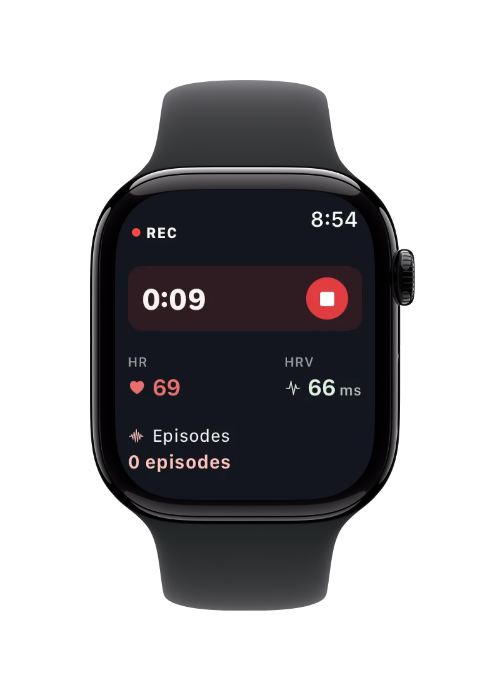
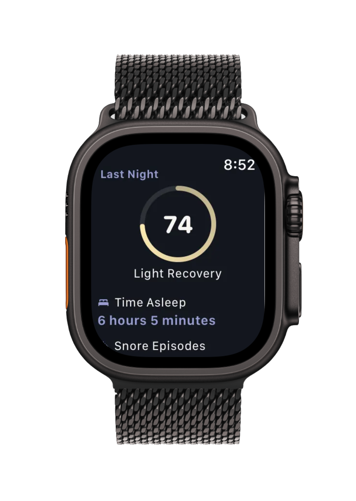
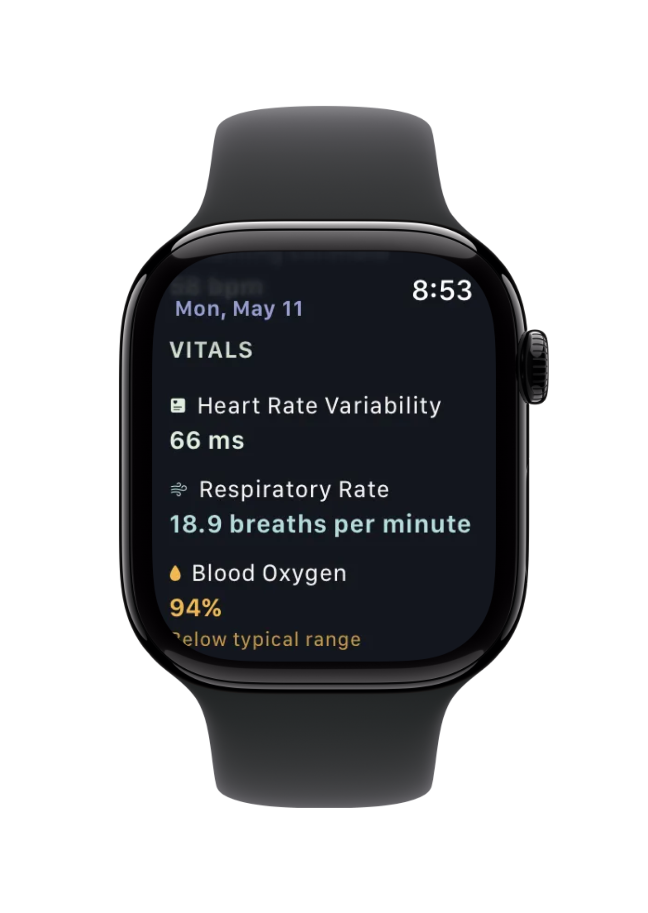
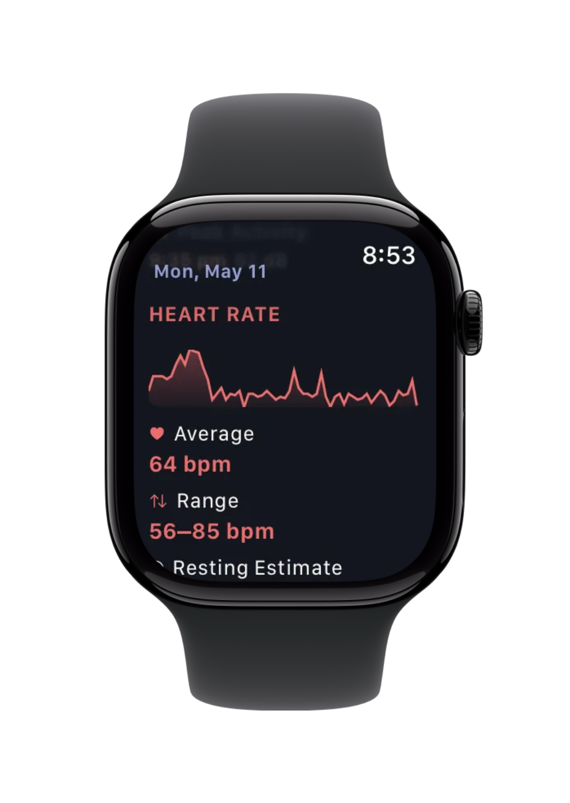

Wake up and see your entire night on an interactive timeline. Scroll through your sleep, zoom in on specific hours, and instantly spot patterns in your snoring.
02
See What Happened
AI-powered detection identifies snores, gasps, coughs, sleep talking, and breathing pauses—all in real-time while you sleep.
03
Review Episodes
Consecutive snores are grouped into episodes. See duration, snore count, and plain-English summaries like "12 snores over 3 minutes."
04
Hear It Yourself
Tap any moment on the timeline to hear enhanced audio. Confirm what happened with your own ears.
05
Track Your Progress
Compare nights and weeks. Export any date range—last 7 days, last 30, or all-time—as a single ZIP with summaries, sleep phases, events, and audio. Ready to share with your doctor.
06
Your Data, Your Device
Everything stays on your iPhone. No cloud uploads, no servers, no accounts required. Complete privacy by design.
Take a tour
See a night, end to end
Step through the screens you wake up to.
STEP 1 / 5
Beyond Snore Tracking
Detect When You Stop Breathing
AI-Powered Analysis
How We Detect Disruptions
In addition to snore detection, our algorithm identifies moments when you stop breathing for 10+ seconds—helping you spot patterns worth discussing with a doctor.
Baseline Observation
Monitors audible breathing for at least one minute to establish accurate baseline patterns
Silence Detection
AI identifies extended quiet periods lasting 10+ seconds—a key indicator of breathing disruptions
Recovery Recognition
Detects loud abrupt snoring, gasps, coughs, or breathing sounds that follow the silent period
Timeline Marking
Places markers at exact timestamps, creating a visual map of disruptions
Audio-Based Estimation
How We Estimate Your Sleep Stages
Using only your phone's microphone, Snore Timeline estimates when you're in light sleep, deep sleep, or REM based on published research into breathing regularity during sleep. And when your breathing is too quiet to hear, it doesn't guess — those calm stretches are labeled Silence and counted as restful sleep.
Listen to Your Breathing
Continuous audio capture via your phone's microphone picks up breathing rate, regularity, and snoring patterns throughout the night
Establish Your Baseline
After ~15 minutes the algorithm learns your personal breathing rate and regularity baseline, adapting thresholds to your unique patterns
Analyze Breath Regularity
Research-based thresholds analyze regularity and variance. Steady, low-variance breathing suggests deep sleep; irregular patterns with high variance indicate REM
Adapt Through the Night
Time-aware logic accounts for natural sleep architecture. Deep sleep peaks early in the night, REM increases toward morning
Honest About Quiet Sleepers
Because everything comes from audio alone, very soft breathing — or a fan masking it — can be inaudible. Instead of guessing a stage, those undisturbed stretches are labeled Silence and credited as restful sleep. A quiet night is the goal, after all
Sleep Insight
Understand Your Sleep Stages
AwakeREMLightDeepSilence
11 PM1 AM3 AM5 AM7 AM
Awake 8%
Light 38%
Deep 19%
REM 24%
Silence 11%
Estimated from audio analysis. Quiet stretches where breathing is too soft to classify are credited as Silence — restful sleep, not missing data. Not a medical device.
watchOS Companion · iOS
Snore Timeline on Your Wrist
An Apple Watch app bundled with the iOS app. Live biometrics while you record, your full night charted by morning, and last night's score on any watch face.

Live · 01
Watch It Happen Live
Live heart rate and HRV during a recording. Tap to end the night with one button—no phone, no unlocking.

Morning · 02
Wake to Your Score
Last night's Sleep Score on your wrist the moment you raise it. Pin it to your watch face as a complication and check it without opening the app.
Stages · 03
See Your Night, Charted
Your full hypnogram on the Watch—Awake, REM, Light, and Deep blocks across the night, with the percentages right there.
Trends · 04
Build Your Sleep Bank
Time asleep charted across the week. Spot patterns, track recovery, and watch your sleep bank fill up night after night.
Apple Health · iOS
One Place for Every Sleep Signal
Snore Timeline reads from and writes to Apple Health. The wearable you already own contributes its data—no extra account, no extra app.
Writes to Apple Health
Derived from your overnight audio
After every recording, Snore Timeline analyzes the audio it captured (breathing patterns, silences, and recovery sounds) and writes the results back to Apple Health. All analysis happens on-device.
Sleep analysis (time asleep, time in bed) — from continuous audio
Respiratory rate during sleep — counted from breath sounds
Reads from Your Wearable
Measured by your Apple Watch or other HealthKit device
Any HealthKit-compatible wearable contributes its overnight metrics. The first time you enable it, the app backfills 30 days of history.
Sleep stages
Heart rate & HRV
Respiratory rate
Blood oxygen (SpO2)
Wrist temperature
Apple Health is encrypted local storage on your device. Nothing is uploaded to a cloud or shared with us.
Nightly Biometrics · iOS
More Than Snores
A nightly biometrics card shows your overnight averages for the metrics that matter, each one rated against your personal baseline and the night charted as a sparkline.
Breathing Ratebr/min
Heart Ratebpm
HRVms
Blood OxygenSpO2 %
Wrist Temperature°F / °C
Each metric is rated against your personal baseline:
GoodTypicalLowElevated
Ratings are informational only. Snore Timeline is not a medical device and does not diagnose any condition.


Go deeper
Everything, explained
The support center walks through every feature, with goal-based guides for whatever brought you here.
"Incredible — It's simple and genius. I also genuinely appreciate the lack of tracking and data collection. A rare gesture of kindness from an app!"
★★★★★
"Brilliant app — Works extremely well and the UI is very nicely thought out. It's enabled me to identify a lot about my snoring problem."
★★★★★
"Free tracking that actually WORKS! Super stoked to finally have an app again that records sleep talking."
★★★★★
"Love the usability and cost — Finally something that is free, no ads and doesn't drain the battery too much!"
"Man, this app is amazing, beautifully designed, intuitive, everything just works and in real time!"
★★★★★
"Very helpful app — Just found this one on Reddit. The app is really helpful, I could not thank you enough."
★★★★★
"Just What I was looking for! — I downloaded and used this app last night, couldn't believe how simple and functional it was. I had tried several other apps that were so full of ads that they were not usable without a large ongoing subscription."
★★★★★
"Very helpful app that works! — I have dozen apps to track snore. To have reports about silent episodes is very helpful. It's my favorite sleep app out of 5 paid subscriptions I have and it's free!"
★★★★★
"Very pleased — Found through Reddit, genuinely a fantastic free app with local tracking only. Tracks sleep quality, records snoring/sleep talking, clean UI."
★★★★★
"Exactly what I need! — I've been looking for something like this for years and years. This is the most comprehensive snoring app I've ever used; it really is great."
★★★★★
"Perfect App! — Has every function someone tracking their snoring could need, in an intuitive and user friendly design. I especially love the ability to put in 'factors' and see how they effect your sleep."
★★★★★
"Incredible — It's simple and genius. I also genuinely appreciate the lack of tracking and data collection. A rare gesture of kindness from an app!"
★★★★★
"Brilliant app — Works extremely well and the UI is very nicely thought out. It's enabled me to identify a lot about my snoring problem."
★★★★★
"Free tracking that actually WORKS! Super stoked to finally have an app again that records sleep talking."
★★★★★
"Love the usability and cost — Finally something that is free, no ads and doesn't drain the battery too much!"
"Man, this app is amazing, beautifully designed, intuitive, everything just works and in real time!"
★★★★★
"Very helpful app — Just found this one on Reddit. The app is really helpful, I could not thank you enough."
★★★★★
"Just What I was looking for! — I downloaded and used this app last night, couldn't believe how simple and functional it was. I had tried several other apps that were so full of ads that they were not usable without a large ongoing subscription."
★★★★★
"Very helpful app that works! — I have dozen apps to track snore. To have reports about silent episodes is very helpful. It's my favorite sleep app out of 5 paid subscriptions I have and it's free!"
★★★★★
"Very pleased — Found through Reddit, genuinely a fantastic free app with local tracking only. Tracks sleep quality, records snoring/sleep talking, clean UI."
★★★★★
"Exactly what I need! — I've been looking for something like this for years and years. This is the most comprehensive snoring app I've ever used; it really is great."
★★★★★
"Perfect App! — Has every function someone tracking their snoring could need, in an intuitive and user friendly design. I especially love the ability to put in 'factors' and see how they effect your sleep."
★★★★★
"Une pépite (A gem) — Je suis absolument ravi d'avoir découvert cette application. Elle est ultra-performante: la détection est précise, et les enregistrements sont d'une clarté impressionnante. L'interface est top, tout est bien pensé."
★★★★★
"Sve što mi treba, a besplatno (Everything I need, and free) — Dugo mi je trebalo da nađem jednostavnu aplikaciju za detektiranje i snimanje hrkanja a da ne moram mjesečno plaćati. Ova aplikacija ima sve opcije koje mi trebaju, potpuno besplatno."
★★★★★
"The best ever — Please never take it off of appstore"
"Wow thanks I've just dl and opened it. I'm Impressed. Measuring my snoring tonight!"
★★★★★
"Amazing — Great app with lots of functionality and settings"
★★★★★
"Recommend — Great app, I really appreciate no ads, and the fact that it's free. I've been looking for an app that will record my sleep talking before for free and gave up. Now I finally found one!"
★★★★★
"Very Good — Very cool, is silent and record all. Try it. No pay no propaganda."
★★★★★
"Application parfaite — Incroyable pour une application gratuite. Étonné de la propreté de l'interface, c'est clean bien hiérarchisé, franchement chapeau je recommande 1000%"
★★★★★
"神一般的软件 — 设计精美，功能完善"
★★★★★
"진짜 좋은 무료 코골이 앱 — 한국에는 거의 안 알려진듯. 유료앱 보다 더 좋음"
★★★★★
"The best and for free — Thank you for releasing this for free, with no accounts and payments. It is sad that other applications charge premium for health related apps as this one."
★★★★★
"Une pépite (A gem) — Je suis absolument ravi d'avoir découvert cette application. Elle est ultra-performante: la détection est précise, et les enregistrements sont d'une clarté impressionnante. L'interface est top, tout est bien pensé."
★★★★★
"Sve što mi treba, a besplatno (Everything I need, and free) — Dugo mi je trebalo da nađem jednostavnu aplikaciju za detektiranje i snimanje hrkanja a da ne moram mjesečno plaćati. Ova aplikacija ima sve opcije koje mi trebaju, potpuno besplatno."
★★★★★
"The best ever — Please never take it off of appstore"
"Wow thanks I've just dl and opened it. I'm Impressed. Measuring my snoring tonight!"
★★★★★
"Amazing — Great app with lots of functionality and settings"
★★★★★
"Recommend — Great app, I really appreciate no ads, and the fact that it's free. I've been looking for an app that will record my sleep talking before for free and gave up. Now I finally found one!"
★★★★★
"Very Good — Very cool, is silent and record all. Try it. No pay no propaganda."
★★★★★
"Application parfaite — Incroyable pour une application gratuite. Étonné de la propreté de l'interface, c'est clean bien hiérarchisé, franchement chapeau je recommande 1000%"
★★★★★
"神一般的软件 — 设计精美，功能完善"
★★★★★
"진짜 좋은 무료 코골이 앱 — 한국에는 거의 안 알려진듯. 유료앱 보다 더 좋음"
★★★★★
"The best and for free — Thank you for releasing this for free, with no accounts and payments. It is sad that other applications charge premium for health related apps as this one."
FAQ
Frequently Asked Questions
Everything you need to know about Snore Timeline
What makes Snore Timeline different from other snore tracking apps?
Snore Timeline keeps the full night's audio and lays it on an interactive timeline you can scrub through and tap to hear. Recording is continuous, not sampled, so a quiet hour reads as a quiet hour. The app tags coughs, gasps, sleep talking, and breathing pauses as their own categories, and groups consecutive sounds into episodes you can play back.
Sleep stage data merges in from Apple Watch, Oura Ring, Whoop, and Garmin. Detection runs on your phone. No cloud, no account, no subscription.
No. Snore Timeline is completely free with no subscription required. All features are included: breathing disruption detection, episode grouping, nightly summaries, and data export—no hidden costs or in-app purchases.
Is my data private?
Absolutely. All audio processing happens entirely on your iPhone—no cloud uploads, no external servers, no accounts required. Your recordings stay on your device and only you have access to them. You can export data to share with doctors while maintaining complete privacy.
Yes, Snore Timeline detects breathing pauses by analyzing your sleep audio. It identifies extended silent periods (10+ seconds) followed by gasps or recovery sounds. The app marks these breathing disruptions on your timeline so you can see patterns. Note: This is audio analysis only, not a medical device. Breathing pauses may be worth discussing with a healthcare professional.
Snore Timeline uses Apple's proven sound classification technology to continuously analyze your audio in real-time throughout the night. Detection starts immediately with no calibration or setup needed. The app identifies snoring, gasps, coughs, breathing, and sleep talking by analyzing both the sound patterns and frequency characteristics of each audio segment. All processing happens entirely on your device for complete privacy.
Yes! Snore Timeline supports Bluetooth audio devices including AirPods, making it easy to record throughout the night without draining your phone's battery.
You can export the entire night's audio as a single file, or bulk download all your snoring episodes at once. For a richer export, tap the download icon to open the Export Report sheet — pick a date range and include summaries, sleep phases, events, biometrics, and (optionally) audio. The report exports as CSV plus any audio you chose to bundle.
Exported files are saved to your device, organized into two folders: